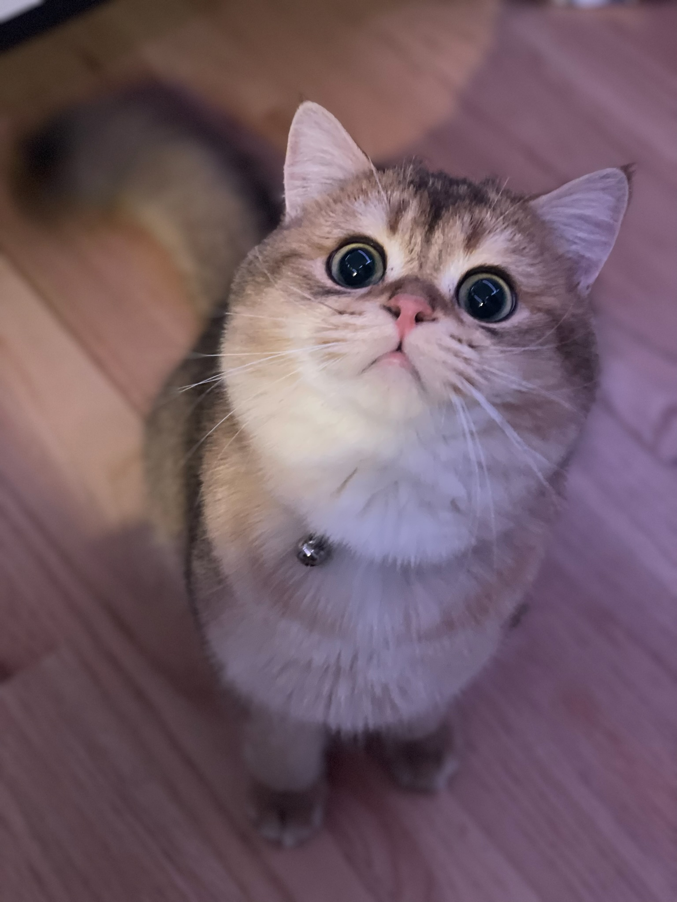

Pehara's Homepage ଘ(੭ˊᵕˋ)੭* ੈ✩‧˚
A Little About Me
Hello, im a csgd major part of the class of 2025! I love video games like the nier series, doom, bloodborne, valorant, phasmaphobia, slime rancher, minecraft and many more. Horror indie games have a special place in my life, and ive grown up consuming a lot of them [I love all things horror]. I also have a passion for art and I love to draw in my spare time. I moved to the US from australia just a couple years ago and since then I have loved meeting new people and discoverimg new things. My favorite things are my cat toast, bread & mushrooms.
╭──────────.★..─╮
*meet my cat toast*
╰─..★.──────────╯
•☽────✧˖°˖☆˖°˖✧────☾•
